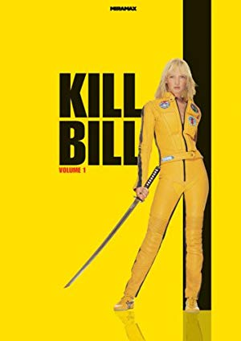
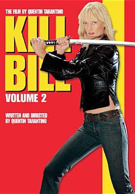
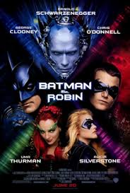
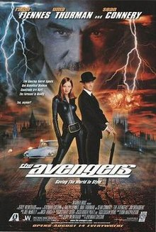
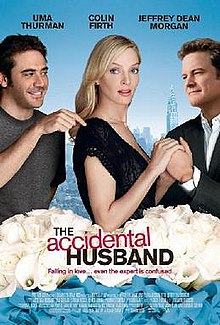
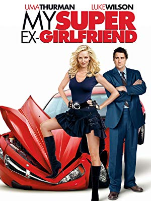

Tall, sandy blonde, with sort of blue eyes, skinny in places, fat in others. An average gal. - Uma Thurman, self description.
I'm very happy at home. I love to just hang out with my daughter, I love to work in my garden. I'm not a gaping hole of need.
It is better to have a relationship with someone who cheats on you than with someone who does not flush the toilet.
I was not particularly bright, I wasn't very athletic, I was a little too tall, odd, funny looking, I was just really weird as a kid.
Desperation is the perfume of the young actor. It's so satisfying to have gotten rid of it. If you keep smelling it, it can drive you crazy. In this business a lot of people go nuts, go eccentric, even end up dead from it. Not my plan.
My washing machine overwhelms me with its options and its sophistication.Everyone looked the same, everyone had it down to such a perfect T. You get bored. That's when you have to say, 'I will be worst-dressed.'", on her questionable choice of Oscar attire this year (2004).I had to go to a mirror and look at it. I couldn't picture myself in my own head. I had no image beyond a stick figure. I wasn't a mean person as a kid, or dumb, and something has to be said to justify excluding you.Before I had my child, I thought I knew all the boundaries of myself, that I understood the limits of my heart. It's extraordinary to have all those limits thrown out, to realize your love is inexhaustible.I think we all exude essential truths about ourselves, and then, as an actress, there's what you do with it. There's your wit and your imagination, and what you can cook up from your experience and understanding of what makes a human being tick.In show business, to pry open doors in new areas is really tough. Until you have a successful comedy, people don't think you could be funny, which is what makes a director like Quentin Tarantino so special. He sees beyond the things on the resume that you've done to date and opens up wonderful cans of worms for you to crawl into. That's a cool thing.